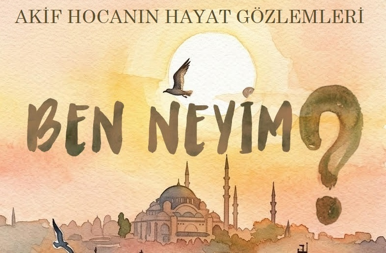

2004'den beri Blogger'da yazılan sayfalardan seçilen bir demet fikir ve gözlem, basılı kitap haline getiriliyor. Kitabın güncel PDF sürümüne
buradan erişebilirsiniz. Seçilen yazıların aslı şu linklerde:
İçindekiler
ÖNSÖZ
HAYATA FARKLI BİR GÖZ İLE BAKABİLMEK
1. Ben Ney’im (16.03.2024)
2. Okul Hayatımın İlk Günü (12.09.2009)
3. Kararlarım Kendi Tercihim mi? (02.06.2024)
4. Modern bir Derviş (07.05.2024)
5. Karadağ’a Çıktım (14.05.2024)
6. Ekmek ve Can (10.06.2005)
7. Nimetler İçinde Gark Olmak (06.10.2020)
8. Bunca Varlık Var iken (29.06.2006)
9. Adalet Herkese Lazım (16.04.2019)
10. Duaya Davet (18.04.2019)
11. Haklının Yanında Olmak (29.05.2013)
12. Hesabınız Tamam Efendim (26.07.2006)
13. Ülfeti Kırmak (06.07.2006)
14. Yeni Bir Göz Almış Gibi (16.09.2026)
15. İyileşmek Büyük Lütuf (13.01.2026)
16. Minibüste Hayat Dersi (23.05.2013)
17. Hayretler İçinde Kalmak (28.11.2021)
18. Ayasofya’da Sabah Namazı (15.08.2021)
19. Cemaatsiz bir Ramazan (01.06.2020)
20. Üç Tepede Üç Hutbe (31.03.2026)
21. Umre Yasak, Kabe Mahzun (06.03.2020)
22. Bilim ve Teknik Dergisi (27.09.2020)
23. Vaktin Çocuğu (28.11.2013)
24. Bilgisayar Cebimize Nasıl Sığdı? (27.11.2013)
25. Bilginin Dereceleri (05.10.2022)
26. Alim Okulu - AFL (28.10.2014)
27. Yedinci Kabuk (21.01.2023)
28. Yedi, Kırk, Yetmiş (15.01.2023)
29. Bulut ve Ben (09.01.2023)
30. Bir Origami Eserinin Doğuşu (02.05.2014)
31. Origami Mutluluk Verir (01.05.2014)
32. İki Kareden Tek Kareye (24.01.2007)
33. Düzgün Altıgen (03.12.2010)
34. Eve Telefon Bağlandı (27.06.2019)
35. Sevgi, Nefret, Nedamet (16.06.2019)
36. Entebbe 1976: Filistinin tükenişi (30.07.2025)
37. Dinlerin ve Dillerin Geçit Töreni (09.04.2026)
38. Fâlûce: Haritadan nasıl silindi? (29.07.2025)
39. Mazlumdan Zalime (05.10.2025)
40. Muhteşem Bir Ma’bed (18.06.2016)
41. Mescid-i Nebevi (29.10.2022)
42. Renkler ve Ben (17.12.2022)
43. Soframıza Buyrun (11.06.2016)
44. Enflasyon (04.07.2022)
45. Tuhaf bir Rüya (13.02.2015)
46. Tuhaf bir Gözaltı (29.12.2021)
47. Samsun Gemisi ile İzmir (11.08.2006)
48. İstanbul’un Yedi Tepesi (13.06.2005)
49. Haliç the Golden Horn (27.06.2005)
50. Dünden Bugüne Yapay Zeka (16.05.2023)
51. Yapay Zekanın Tarihçesi (24.06.2023)
52. İsimler Değişmesin (08.12.2004)
53. Vefa ve Eski Dostlar (21.10.2024)
54. Mustafa Yeşilyurt (04.10.2017)
55. Fuat Sezgin’in Ardından (30.06.2018)
56. Bir Müze Kurmak (24.09.2006)
57. Bu da Geçer Yahu (02.03.2026)
58. Geçip Gidenler (04.06.2005)
SON SÖZ
TEŞEKKÜR
Blogdan Kitaba
ÖNSÖZ
Akif Hoca (Prof. Dr. Mehmet Akif Eyler)
Erenköy’de komşuluk yaptık. Erenköy tren istasyonunun hemen yanındaki Zihni Paşa Camii ortak buluşma yerimiz oldu. Sabah namazı sonraları sessiz yürüyüşümüz her ikimize de huzur verdi. Güç verdi.
1993’de Bilkent Üniversitesinde öğretim üyesi iken başlattığı Cuma Dersleri 33 yıldır aynı heyecan ile devam ediyor. Bu derslerde benim en çok saygı duyduğum, Akif Hoca’nın hiç tereddüt etmeden “bilmiyorum” diyebilmesidir. Hoca dediğin nasıl olur da bilmez demiyor. Mütevazi olarak bilmediğine “bilmiyorum” diyor. Nokta.
Bu kitap fikri hocanın en son dersinde söylediği bir söz ile tetiklendi. “İlham gelme sıklığı arttı, demek ki artık sona yaklaşıyorum.” Tabi Allah hayırlı ömür versin ama hocanın birikimlerinin bir kitap ile bir bütün olarak ilgilenenlere erişmesini Hoca yaşarken görsün istedim. Önerdim. Kabul göreceğini doğrusu düşünmüyordum Ama kabul etti. Hatta benim editörlüğü de kabul etti ve kitabın bölümlerini de kendisi yazdı:
• Hayat, Bilim, Sanat, İrşad
Akif hocamızın değişik ortamlarda yazdıklarını, geliştirdiklerini, anılarını, gözlemlerini bir kitap olarak bu bölümler altında topladık.
Gelecek nesillerimize faydalı olması duası ile.
Ali Demir
Üsküdar, 12 Nisan 2026
HAYATA FARKLI BİR GÖZ İLE BAKABİLMEK
İnsanoğlu su misali geliyor yaşıyor ve dünyada kendisine biçilen ömrünü tamamladıktan sonra aslına geri dönüyor. Her insan biçilen bu ömür içerisinde farklı bir rolü üstleniyor. Yaşam devam ediyor. Herkes rolünü üstleniyor. Ama göz ardı edilen bir nokta var. Rolü ne olursa olsun. Nasıl yaşarsa yasasın, neler yaparsa yapsın, insanların ortak bir görevi var. Bu dünyayı ve yaşamı anlamak. Bunun için sürekli bir arayış içinde devam ediyor. Kimisi zengin olmanın peşinde koşarken kimisi makam ve mevkiye ulaşmanın derdine düşüyor. Kimisi iyi bir bilim insanı olmak isterken kimisi iş adamı olup dünyanın her yerinde ticaret yapmanın uğraşını veriyor. Bu durmak bilmeyen arayışın içerisinde sizce bir eksiklik yok mu? İnsanların hemen hemen büyük bir çoğunluğu yaşamlarının odağına bu dünyadaki kazanımları koymuş, yaşam sonrası olacakları hep ikinci planda tutuyor. Geçici bir dünyanın sefasının kalıcı dünyanın sefası ile mukayese edilmesi yönünde de pek aktif olunduğu söylenemez.
Bu dünyada olayları gözlemlerken, değerlendirirken işin özünü kaçırmayıp öteki dünyanın hakikatlerini keşfetme yönünde çalışmak önemli bir bakış açı oluyor. Öyle olması da gerekiyor. Onun içindir ki! yaradan “Göklerin ve yerin yaratılışında, gece ile gündüzün birbiri ardınca gelip gidişinde aklıselim sahipleri için gerçekten açık ibretler vardır. (Ali İmran, 190)“ diyerek insanı dünyanın gidişatına makam mevki için, zenginlik için, mal mülk edinmek için, otorite kurmak için değil daha farklı bir gözle bakmayı tavsiye ediyor. Dünyaya bakışını bu eksene çeken insan oğlu “Yeri döşeyen, onda oturaklı dağlar ve ırmaklar yaratan ve orada bütün meyvelerden çifter çifter yaratan, geceyide gündüzün üzerine örten ilahi mesajı (Rad, 3) daha iyi anlayacaktır. “Yeryüzünde birbirine komşu kıtalar, üzüm bağları, ekinler, bir kökten ve çeşitli köklerden dallanmış hurma ağaçları vardır. Bunların hepsi bir su ile sulanır. (Böyle iken) yemişlerinde onların bir kısmını bir kısmına üstün kılarız. İşte bunlarda akıllarını kullanan bir toplum için ibretler vardır. (Rad,4)” ilahi mesajının özünü kavrayabilir.
Bu örnekleri arttırmak mümkündür. Ama olaylara görünen yüzü kadar arka plandaki “hikmet” arayışı ile bakmak farklı yorumların doğması için bir yol açacaktır. Bu nedenle kimisi bir tepeye bakınca toprak parçası görürken bir diğer o toprak parçasını oraya konuşlandıran güce odaklanmaktadır. Mesele olaylara bakış açısını doğru eksene oturtmaktır. Bu kitap aslında bir insanın gözlemlerini farklı bir bakış açısı ile yazıya dökmesinin güzel bir örneğini oluşturmaktır. Okuyucunun yazılanları, olağan ve sıradan birer yaşam örneği gibi değerlendirmek yerine her olayın farklı bir açıdan değerlendirilmesine odaklanması beklenmektedir. Bu yolla okuyucu kendi farklı açısını da oluşturabilecek ve kendi dünyasında aynı olayı yorumlayarak ömrünü bilime adamış bir insanın bakış açısı ile kendi bakış açısını bütünleştirebilecektir. Umulur ki bu bakış açılarının birbiri ile çatışması veya bütünleşmesi, kendi yaşam eğrisini “doğru” eksene kaydırması için bir vesile olacaktır. Bu eksende başlanırsa belki de ilk sorulacak soru: Ben neyim? Nereden geldim? Nereye gidiyorum? Sorularına cevap aramaktır. Akif Eyler de farklı bir bakış açısı ile konuyu değerlendirmiştir. Olaylara farklı bir çerçeveden bakarak dikkatleri Celâleddin Rûmi’nin kendisini Ney’e benzetmesine dikkat çekmiştir. Hep birlikte bu bakış açısını gözden geçirelim mi?
Ercan Öztemel
Pendik, 22 Nisan 2026
SON SÖZ
Her an yeniden yaratılan kâinatta yaşayan bilgi sahibi (Alim) kişilerin ortalama insandan farklı olarak dünyaya ve olaylara bakışı hepimize yöne veren gözlemler olmuştur.
İşte elinizdeki bu eserde Akif Hocanın yaptığı budur. Sahip olduğu bilgi ve tecrübe birikimi ile dünyaya ve hayata bakarak gözlemler yapmış ve kendi akıl süzgecinden geçirerek blog sayfaları olarak bizlere sunmuştur. Kişisel olarak ben bunlardan hep etkilendim. İlk paylaşıldığı zamanlar ilgiyle ve dikkatle okudum. Kendi adıma dersler çıkardım. İstikametimi sorguladım. Zihnimde var olan sorulara cevaplar buldum.
Ümit ediyorum, bu kitabı okuyanlar da benim gibi buradaki gözlemlerden kendilerine istikamet çıkarırlar ve hem dünyalarının hem de inandığımız ahiretlerinin güzelleşmesine sebep olur.
Ali Demir
Kısıklı, Mayıs 2026
TEŞEKKÜR
Yirmi yılı aşkın bir süredir dijital dünyada (Blogger ortamında) kelimelerle ördüğüm dağınık yazılara "eser" olarak kıymet verilmesi, derlenip toplanması, ömrümün sonlarında yaşadığım en ilginç projedir.
Kendi sesimi ve tarzımı olduğu gibi muhafaza ederek; her yazının ruhunu "Sözün Özü" ile taçlandıran, seçtikleri yazıları ilmek ilmek işleyen kıymetli dostlarım ve meslektaşlarım Ali Demir ve Ercan Öztemel’e gönülden teşekkürlerimi sunarım.
Benim için bu çalışma, eski yazıları bir araya getirmekten başka, bir ömrün gözlemlerini dostluğun yardımı ile geleceğe bırakmaktır. Onların geniş vizyonu ve titiz editörlüğü sayesinde, blog kayıtları daha geniş bir okuyucu grubu bulacak. Emeğinize, vaktinize, dostluğunuza sağlık.
Mehmet Akif Eyler
Kadıköy, Mayıs 2026